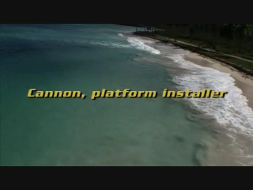
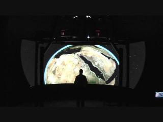
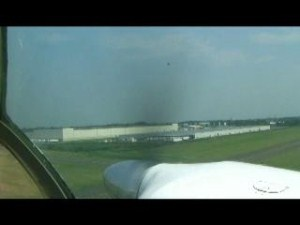
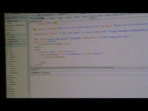
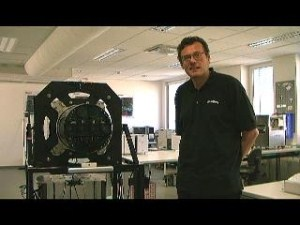

Channel 9 Blog for Mark Brown
Cannon PI - To Catch An Eagle[WMV] [0:04:11] [2009/05/16]Welcome to Episode #1. In this episode watch Cannon PI, and his sidekick "Jim" as they help two developers get their web developer platform setup and ready to go with the applications they…
Cannon PI - Introduction[WMV] [0:01:13] [2009/05/15]
There comes a time only maybe once in our lives where a true hero for the web developer emerges. They are daring problem solvers but may be a little rough around the edges, drive fast cars from the…
Multi-Channel Virtual Earth Viewer[WMV] [0:02:56] [2008/10/28]At the PDC Showoff tonight the ACE Lab at Carlton University in Canada led by Jon Wade, submitted a video that showed an incredible multi-channel version of the Virtual Earth control that provides
a…
Behind The Maps - Flying the UltraCam[WMV] [0:52:16] [2008/08/08]In this second episode of Behind The Maps we go to Philadelphia to see the UltraCam in action. One of our partners,
Keystone Aerial Surveys, shows us the next step in the process where the UltraCam…
Virtual Earth ASP.NET Control - CTP Release[WMV] [0:10:21] [2008/07/29]Finally at long last we have released the Virtual Earth ASP.NET control (CTP Release). I spent a few minutes with Angus Logan from the Windows Live Platform Team to show off the control and give a…
Behind The Maps - UltraCam[WMV] [0:41:28] [2008/07/06]Welcome to the inaugural episode of a new video series called, "Behind The Maps". In this series we'll explore all of the technology that makes up
Virtual Earth and meet the scientists and…